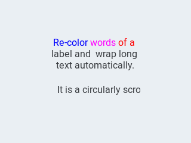
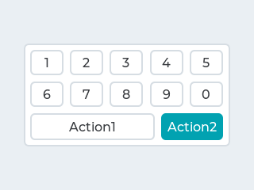
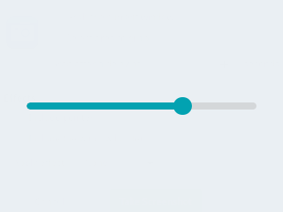
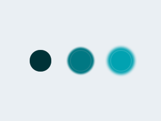
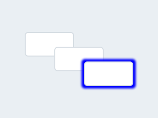

Objects
There are two ways to create an object on the screen:
- Uploading a
pages.jsonlfile onto the internal flash - Use the
jsonlcommand (via MQTT, serial or telnet console)
Common Properties~
These are the common properties shared among all objects,
but only the id and obj properties are required to create an object:
| Property | Value | Required | Default | Description |
|---|---|---|---|---|
| id | 1..255 | yes | n/a | ID of the object on this page |
| obj | string | yes | n/a | Name of the object type (see below) |
| page | 0..12 | no | n/a | ID of the page the object appears on |
| x | int16 | no | 0 | horizontal position on the page |
| y | int16 | no | 0 | vertical position on the page |
| w | int16 | no | 0 | width of the object |
| h | int16 | no | 0 | height of the object |
| enabled | bool | no | true | object is clickable |
| hidden | bool | no | false | object is hidden |
| opacity | 0..255 | no | 255 | how much the the object is opaque |
| radius | uint16 | no | dep. on theme | the radius of the rounded corners of the object0 = square corners100 - pill shaped object (true circle if object has same width and height) |
If the page parameter is not present, the object is placed on the same page as the previous object. If page is not specified for the first object either, the current page being displayed is used.
The maximum number of pages and objects is limited by the memory available in the MCU.
"page":0 indicates that the object is visible on all pages. It can be used for example to specify a static menu bar.
You can still hide the object on select pages if needed. Objects on page 0 appear on top of any objects on the underlying page.
Common Methods~
These are the common methods shared among all objects,
| Method | Parameters | Description |
|---|---|---|
| delete | Delete the object from the page | |
| to_front | Bring the object to the front on the page | |
| to_back | Send the object to the back on the page |
p1b5.delete
p1b3.to_front
Object Types~
Each object type is an ID that indicates which object type that line represents. Besides the common properties listed above, each object type can have specific properties.
Cheatsheet~
| objid | obj | Type | Description |
|---|---|---|---|
| 10 | btn | Binary | Button |
| 11 | checkbox | Binary | Checkbox |
| 40 | switch | Binary | Switch |
| 32 | bar | Range | Progress Bar |
| 30 | slider | Range | Slider |
| 22 | arc | Range | Arc |
| 33 | lmeter | Range | Line Meter |
| 31 | gauge | Range | Gauge |
| 50 | dropdown | Selector | Dropdown List |
| 51 | roller | Selector | Roller |
| 13 | btnmatrix | Selector | Button Matrix |
| 20 | cpicker | Selector | Colorpicker |
| 91 | obj | Visual | Base Object |
| 12 | label | Visual | Label |
| 41 | led | Visual | LED |
| 21 | spinner | Visual | Spinner |
Button~
obj:btn

| Property | Value | Default | Description |
|---|---|---|---|
| toggle | bool | false | When enabled, creates a toggle-on/toggle-off button. If false, creates a normal button |
| val | int16 | 0 | The value: 1 for toggled, 0 for untoggled |
| text | string | "" | The text of the label |
| mode | string | expand |
The wrapping mode of long text labels.expand = Expand the object size to the text sizebreak = Keep the object width, break the too long lines and expand the object heightdots = Keep the size and write dots at the end if the text is too longscroll = Keep the size and roll the text back and forth loop = Keep the size and roll the text circularlycrop = Keep the size and crop the text out of it |
Normal buttons (toggle=false) send touch events while they occur. The possible events are:
DOWN: Occurs when a button goes from depressed to pressedSHORT: The button was released within a short time i.e. a short click has occurredLONG: Event is send when the button is still being pressed after the threshold timeUP: The button is released after being pressing for a LONG threshold time.
Toggle Switches (toggle=true) send out their new value only when toggled: {"val":"0"} or {"val":"1"}.
Example:
{"obj":"btn","id":1,"x":10,"y":45,"w":220,"h":55,"toggle":true,"text":"Push Me \uf0a6"}
Checkbox~
obj:cb

| Property | Value | Default | Description |
|---|---|---|---|
| val | int16 | 0 | 1 = checked0 = unchecked |
| text | string | "Checkbox" | The label of the checkbox |
Note
The checkbox object ignores the w and h attribute. These are calculated
based on the font and text.
Text Label~
obj:label

| Property | Value | Default | Description |
|---|---|---|---|
| text | string | "Text" | The text of the label, \n for line break. |
| mode | string | crop |
The wrapping mode of long text labels.expand = Expand the object size to the text sizebreak = Keep the object width, break the too long lines and expand the object heightdots = Keep the size and write dots at the end if the text is too longscroll = Keep the size and roll the text back and forth loop = Keep the size and roll the text circularlycrop = Keep the size and crop the text out of it |
| align | 0..2 | 0 | Text alignment: 0 = left, 1 = center, 2 = right |
Example:
{"page":2,"id":1,"obj":"label","h":24,"w":120,"text":"\ufe05 Icon Demo"}
Button Matrix~
obj:btnmatrix

| Property | Value | Default | Description |
|---|---|---|---|
| options | json array | "Text" | Json array of strings where each element is the label of a button. Use "\n" for a new line of buttons. |
| align | 0..2 | 0 | Text alignment: 0 = left, 1 = center, 2 = right |
The styling properties apply to all buttons in the matrix.
To change the color of a single label prefix the text with a #RRGGBB hexadecimal color code and close with a single hash # tag.
Example:
p2b1.options ["#FF0000 Red Text#","#0000FF Cyan Text#","\n","#FFFF00 Yellow Text#"]
Arc~
obj:arc

| Property | Value | Default | Description |
|---|---|---|---|
| min | int16 | 0 | minimum value of the indicator |
| max | int16 | 100 | maximum value of the indicator |
| val | int16 | 0 | current value of the indicator |
| rotation | int16 | 0 | offset to the 0 degree position |
| type | 0-2 | 0 | 0 = normal, 1 = symmetrical, 2 = reverse |
| adjustable | bool | false | Add knob that the user can operate to change the value |
| start_angle | 0-360 | start angle of the arc background (see note) | |
| end_angle | 0-360 | end angle of the arc background (see note) | |
| start_angle1 | 0-360 | start angle of the arc indicator (see note) | |
| end_angle1 | 0-360 | end angle of the arc indicator (see note) |
Note
Zero degree is at the middle right (3 o'clock) of the object and the degrees are increasing in a clockwise direction. The angles should be in the [0-360] range.
Spinner~
obj:spinner

| Property | Value | Default | Description |
|---|---|---|---|
| speed | int16 | 1000 | The time for 1 turn in ms |
| direction | int16 | 100 | 0 = clockwise, 1 = counter-clockwise |
| thickness | int16 | dep. on theme | The width of the arc line |
Colorpicker~
obj:cpicker

| Property | Value | Default | Description |
|---|---|---|---|
| color | color | 0 | The selected color in html format #rrggbb |
| rect | bool | false | true = color picker has a rectangular shape like a slider. false = circular shape. |
Setting Color
Examples:
p0b2.color=13891
p1b5.color=silver
p2b3.color=#C0C0C0
Slider~
obj:slider

| Property | Value | Default | Description |
|---|---|---|---|
| min | int16 | 0 | minimum value of the indicator |
| max | int16 | 100 | maximum value of the indicator |
| val | int16 | 0 | current value of the indicator |
Double Slider~
objid:30
| Property | Value | Default | Description |
|---|---|---|---|
| min | int16 | 0 | minimum value of the indicator |
| max | int16 | 100 | maximum value of the indicator |
| val | int16 | 0 | current value of the indicator |
Line Meter~
obj:lmeter

| Property | Value | Default | Description |
|---|---|---|---|
| min | int16 | 0 | minimum value of the indicator |
| max | int16 | 100 | maximum value of the indicator |
| val | int16 | 0 | current value of the indicator |
| angle | 0-360 | 240 | angle between start and end of the scale |
| line_count | uint16 | 31 | tick count of the scale |
| rotation | 0-360 | 0 | offset for the scale angles to rotate it |
| type | 0-1 | 0 | 0 = indicator lines are activated clock-wise1 = indicator lines are activated counter-clock-wise |
Use line properties to customise.
Gauge~
obj:gauge
| Property | Value | Default | Description |
|---|---|---|---|
| min | int16 | 0 | minimum value of the indicator |
| max | int16 | 100 | maximum value of the indicator |
| val | int16 | 0 | current value of the indicator |
| critical_value | int16 | 80 | scale color will be changed to scale_end_color after this value |
| angle | 0-360 | 240 | angle between start and end of the scale |
| label_count | uint8 | number of labels (and minor tick count) of the scale | |
| line_count | uint16 | 31 | minor tick count of the scale |
| rotation | 0-360 | 0 | offset for the gauge's angles to rotate it |
| format | uint16 | 0 | divider for major tick values |
To strip trailing zero's of major tick labels the format divider can be used to scale the values before printing:
0: print the major tick value as is1: strip 1 zero, i.e. divide tick value by 10 before printing the major tick label2: strip 2 zeros, i.e. divide tick value by 100 before printing the major tick label3: strip 3 zeros, i.e. divide tick value by 1000 before printing the major tick label4: strip 4 zeros, i.e. divide tick value by 10000 before printing the major tick label
Only these values are allowed, arbitrary numbers are not supported.
Progress Bar~
obj:bar

| Property | Value | Default | Description |
|---|---|---|---|
| min | int16 | 0 | minimum value of the indicator |
| max | int16 | 100 | maximum value of the indicator |
| val | int16 | 0 | current value of the indicator |
Switch~
obj:switch

| Property | Value | Default | Description |
|---|---|---|---|
| val | bool | 0 | 1 = on, 0 = off |
bg_color1 changes indicator color and bg_color2changes knob color
LED Indicator~
obj:led

| Property | Value | Default | Description |
|---|---|---|---|
| val | byte | 0 | The brightness of the indicator [0..255] |
Dropdown List~
obj:dropdown

| Property | Value | Default | Description |
|---|---|---|---|
| options | string | "" | List of items separated by \n |
| val | int16 | 0 | The number of the selected item |
| text | string | "" | Read-only The text of the selected item |
To change the currently selected item, use the val attribute.
To change the items in the list, use the options attribute.
When the item is changed both val and text of the newly selected item are send out.
Roller~
obj:roller
| Property | Value | Default | Description |
|---|---|---|---|
| options | string | "" | List of items separated by \n |
| val | int16 | 0 | The number of the selected item |
| text | string | "" | Read-only The text of the selected item |
| rows | int8 | 3 | The number of rows that are visible Use this property instead of h to set object height |
| align | 0..2 | 0 | Text alignment: 0 = left, 1 = center, 2 = right |
To change the currently selected item, use the val attribute.
To change the items in the list, use the options attribute.
When the item is changed both val and text of the newly selected item is sent out.
Base Object~
obj:obj

The Base Object can be directly used as a simple widget. It is nothing more then a (rounded) rectangle.
You can use it as a background shape for other objects by putting its jsonl line before the object.